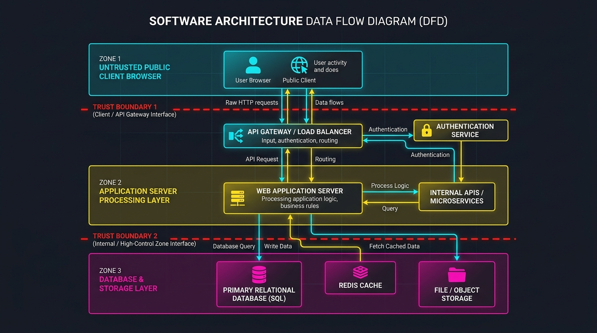
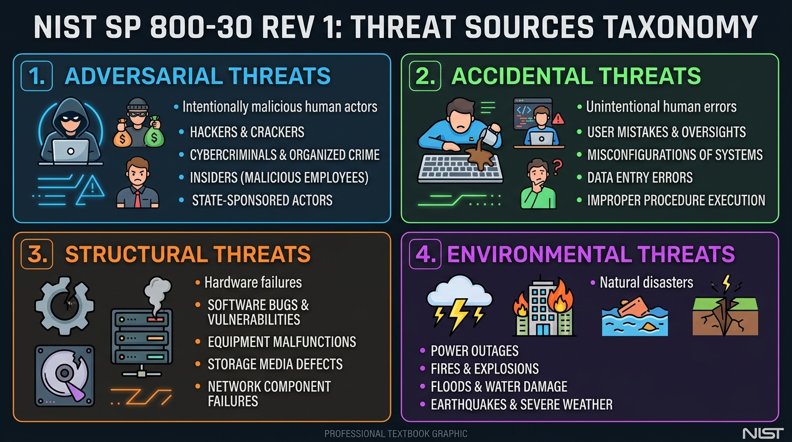
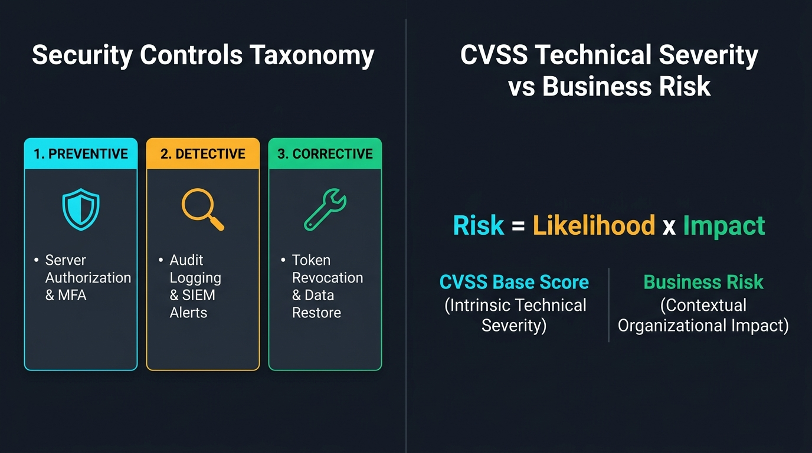

NU 305331 / Chapter 02 / §0 เปิดบท
บทที่ 2: การไหลของข้อมูล เส้นเขตแดนความเชื่อถือ และการคิดเชิงภัยคุกคาม
305331 ความมั่นคงของคอมพิวเตอร์และสารสนเทศ
NU 305331 / Chapter 02 / §0 เปิดบท
วัตถุประสงค์การเรียนรู้
DFD และ Trust Boundary
วาดและอธิบายแผนภาพการไหลของข้อมูล ระบุตำแหน่งเส้นเขตแดนความเชื่อถือ (CLO1+CLO2)
อนุกรมวิธานภัยคุกคาม
จำแนกภัยคุกคามและผู้กระทำตามเกณฑ์ NIST SP 800-30 Rev. 1 (CLO2)
CWE/CVE/CVSS vs Risk
แยกแยะความรุนแรงทางเทคนิคออกจากระดับความเสี่ยง (CLO2)
มาตรการควบคุม
จำแนกประเภท Preventive/Detective/Corrective Controls ตาม ISO/IEC 27002:2022 (CLO2)
NU 305331 / Chapter 02 / §1 ความสำคัญของหัวข้อนี้และการเชื่อมโยงกับบทที่ 1
จากบทที่ 1: สินทรัพย์เดินทางอยู่ที่ไหน?
ในบทที่ 1: สินทรัพย์ (ข้อมูลส่วนบุคคล, รหัสผ่าน, เกรด, ซอร์สโค้ด) + เป้าหมาย CIA Triad → คำถามต่อ: สินทรัพย์เหล่านี้ประมวลผลและจัดเก็บอยู่ที่ใด? ความเสี่ยงต่อ CIA จะเกิดขึ้น ณ จุดใดของระบบ?
NU 305331 / Chapter 02 / §1 ความสำคัญของหัวข้อนี้และการเชื่อมโยงกับบทที่ 1
สินทรัพย์เดินทางผ่านระบบ (Data Flow)
NU 305331 / Chapter 02 / §2 การไหลของข้อมูลและเส้นเขตแดนความเชื่อถือ
นิยาม: เส้นเขตแดนความเชื่อถือ
เส้นเขตแดนความเชื่อถือ (Trust Boundary) = ตำแหน่งในสถาปัตยกรรมที่ระดับความไว้วางใจ สิทธิ์การเข้าถึง หรือนโยบายการควบคุมเปลี่ยนไป
NU 305331 / Chapter 02 / §2 การไหลของข้อมูลและเส้นเขตแดนความเชื่อถือ
เปรียบเทียบให้เห็นภาพ: ด่านตรวจคนเข้าเมือง
พื้นที่ภายนอก (Untrusted Zone)
ถนนสาธารณะหน้าคอนโด ใครก็เดินผ่านไปมาได้โดยไม่มีใครควบคุมสิทธิ์
เส้นเขตแดน (Trust Boundary)
ประตูแลกบัตรหรือป้อมยาม จุดตั้งระบบตรวจสอบสิทธิ์
พื้นที่ภายใน (Trusted Zone)
โซนห้องพักส่วนบุคคลที่มีสิทธิ์สูง ต้องใช้คีย์การ์ดเฉพาะผู้พักอาศัย
NU 305331 / Chapter 02 / §2 การไหลของข้อมูลและเส้นเขตแดนความเชื่อถือ
กฎทองคำทางความปลอดภัย
"ข้อมูลทุกอย่างที่เดินทางข้ามผ่าน Trust Boundary เข้ามา ต้องถูกปฏิบัติในฐานะ Untrusted Input เสมอ จนกว่าจะผ่านการตรวจสอบสิทธิ์ครบถ้วน"
NU 305331 / Chapter 02 / §2 การไหลของข้อมูลและเส้นเขตแดนความเชื่อถือ
ตัวอย่างจริง: Trust Boundary ในสถาปัตยกรรม

NU 305331 / Chapter 02 / §2 การไหลของข้อมูลและเส้นเขตแดนความเชื่อถือ
สามสถานการณ์ตัวอย่างในระบบจริง
Student Project Portal
Client Browser ↔ API Gateway (Untrusted Input) และ App Server ↔ Database (ป้องกัน IDOR)
ระบบชำระเงินออนไลน์
เว็บขายของ ↔ API ธนาคาร ใช้ HMAC Signature และ mTLS ยืนยันคำขอตัดเงิน
Mobile Banking
แอปธนาคาร ↔ Secure Enclave ฮาร์ดแวร์ ถามแค่ YES/NO พร้อม Signature ไม่อ่านลายนิ้วมือตรง
NU 305331 / Chapter 02 / §2 การไหลของข้อมูลและเส้นเขตแดนความเชื่อถือ
กลไกควบคุม 3 ขั้นตอน ณ จุด Trust Boundary
NU 305331 / Chapter 02 / §2 การไหลของข้อมูลและเส้นเขตแดนความเชื่อถือ
ข้อควรระวัง: ภายในไม่ได้แปลว่าปลอดภัย
การที่โซนฐานข้อมูลตั้งอยู่ภายในเครือข่ายองค์กร ไม่ได้หมายความว่าเป็นโซนที่ปลอดภัย 100% โดยไม่ต้องตรวจสอบสิทธิ์ — ยังต้องใช้ Zero Trust และ Least Privilege
NU 305331 / Chapter 02 / §3 ภัยคุกคามและอนุกรมวิธานผู้กระทำ
สี่คำที่ต้องแยกให้ออก
ภัยคุกคาม
สถานการณ์ที่มีศักยภาพก่อผลกระทบเชิงลบต่อระบบ สินทรัพย์ หรือองค์กร
แหล่งที่มา
จุดกำเนิด เจตนา วิธีการ หรือเงื่อนไขต้นเหตุ
ผู้กระทำ
บุคคล กลุ่ม หรือองค์กรผู้มุ่งร้ายที่มีเจตนา
กิจกรรม
เหตุการณ์เฉพาะเจาะจงที่เกิดขึ้นจริง
NU 305331 / Chapter 02 / §3 ภัยคุกคามและอนุกรมวิธานผู้กระทำ
อนุกรมวิธานแหล่งที่มาภัยคุกคาม 4 กลุ่ม

NU 305331 / Chapter 02 / §3 ภัยคุกคามและอนุกรมวิธานผู้กระทำ
รายละเอียด 4 กลุ่มแหล่งที่มาภัยคุกคาม
Adversarial
มนุษย์/องค์กรมีเจตนาโจมตี — แฮกเกอร์ อาชญากรไซเบอร์ Insider Threat หรือ State Actors
Accidental
ผิดพลาดจากมนุษย์โดยไม่มีเจตนา — พิมพ์คำสั่งผิด ตั้งค่าไฟร์วอลล์ผิด
Structural
ความล้มเหลวของอุปกรณ์/ซอฟต์แวร์ — ฮาร์ดดิสก์เสีย Software Bug ไฟดับ
Environmental
ภัยธรรมชาติ/เหตุการณ์ภายนอกที่ควบคุมไม่ได้ — อัคคีภัย น้ำท่วม แผ่นดินไหว
NU 305331 / Chapter 02 / §3 ภัยคุกคามและอนุกรมวิธานผู้กระทำ
ฝึกจำแนก: 4 เหตุการณ์ 4 กลุ่ม
สถานการณ์:
- (ก) แฮกเกอร์ส่ง SQL Injection
- (ข) วิศวกรพิมพ์คำสั่งลบฐานข้อมูลผิด
- (ค) ฮาร์ดดิสก์เซิร์ฟเวอร์พังเพราะเสื่อมสภาพ
- (ง) เกิดอัคคีภัยในห้องเซิร์ฟเวอร์
NU 305331 / Chapter 02 / §4 อนุกรมวิธานช่องโหว่ มาตรการควบคุม และความรุนแรงเทียบความเสี่ยง
ช่องโหว่และสามระบบมาตรฐาน
Vulnerability (ช่องโหว่)
จุดอ่อนหรือข้อผิดพลาดที่ใช้เป็นช่องทางข้ามผ่านความคุ้มครองได้
CWE
คลังจุดอ่อนทางเทคนิค ดูแลโดย MITRE
CVE
รหัสช่องโหว่เฉพาะที่พบจริง
CVSS
คะแนนความรุนแรง ดูแลโดย FIRST
NU 305331 / Chapter 02 / §4 อนุกรมวิธานช่องโหว่ มาตรการควบคุม และความรุนแรงเทียบความเสี่ยง
เปรียบเทียบให้เข้าใจง่าย
CWE = ชื่อโรค/กลุ่มอาการ
เช่น CWE-89 SQL Injection
CVE = รหัสผู้ป่วย/เคสจริง
เช่น CVE-2021-44228 Log4Shell
CVSS = ดัชนีความรุนแรงตามตำราแพทย์
คะแนน 0.0–10.0
NU 305331 / Chapter 02 / §4 อนุกรมวิธานช่องโหว่ มาตรการควบคุม และความรุนแรงเทียบความเสี่ยง
ความรุนแรงทางเทคนิค ≠ ระดับความเสี่ยง

NU 305331 / Chapter 02 / §4 อนุกรมวิธานช่องโหว่ มาตรการควบคุม และความรุนแรงเทียบความเสี่ยง
ตัวอย่าง: คะแนนสูงแต่ความเสี่ยงต่ำ
ช่องโหว่ RCE คะแนน CVSS 9.8/10 (Critical) — แต่อยู่บนเซิร์ฟเวอร์ทดลองที่ตัดขาดจากเครือข่ายภายนอก ไม่มีข้อมูลสำคัญ เข้าถึงไม่ได้ → Business Risk ต่ำมาก
NU 305331 / Chapter 02 / §4 อนุกรมวิธานช่องโหว่ มาตรการควบคุม และความรุนแรงเทียบความเสี่ยง
มาตรการควบคุม 3 ประเภทตามลักษณะการทำงาน
Preventive
ยับยั้งไม่ให้เหตุการณ์เกิดขึ้น — Server-side Authorization Check, MFA
Detective
เฝ้าระวังและตรวจพบเมื่อเกิดขึ้น — Audit Log, SIEM Alert
Corrective
หยุดยั้งความเสียหายและฟื้นฟู — Revoke Token, Data Restore
NU 305331 / Chapter 02 / §4 อนุกรมวิธานช่องโหว่ มาตรการควบคุม และความรุนแรงเทียบความเสี่ยง
ฝึกออกแบบ: ป้องกันการลักลอบแก้ไขคะแนน
สถานการณ์: ต้องออกแบบมาตรการควบคุมครบ 3 ประเภทสำหรับป้องกันการลักลอบแก้ไขคะแนนประเมินใน Student Project Portal
NU 305331 / Chapter 02 / §5 สรุปสาระสำคัญ
สรุปสาระสำคัญของบท
- สินทรัพย์และ CIA จากบทที่ 1 เดินทางผ่านระบบ (Data Flow) และเกิดความเสี่ยงสูงสุด ณ Trust Boundary
- DFD + Trust Boundary ชี้จุดที่ต้องใช้ Validation/Authentication/Authorization
- แหล่งที่มาภัยคุกคาม 4 กลุ่มตาม NIST SP 800-30: Adversarial/Accidental/Structural/Environmental
- CWE/CVE/CVSS คนละระบบ Severity ≠ Risk (Likelihood × Impact)
- มาตรการควบคุม 3 ประเภท: Preventive/Detective/Corrective
NU 305331 / Chapter 02 / §6 คำถามทบทวน